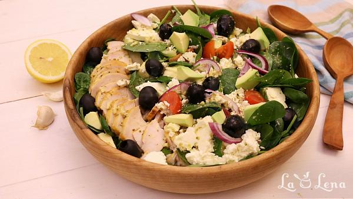

Salata Greceasca cu Pui si Avocado

Dificultate-ușor
Timp de preparare-120 min
Cantitatea-700 grame
Pasul 1 Mai intai puneti pieptul de pui pe gratar, sau il faceti din timp pastrama de casa dupa reteta mea. Eu de obicei pregatesc mai multe fileuri si le tin la congelator pentru retete de acest tip.
Pasul 2 Spalati, uscati si rupeti frunzele de salata. Eu le-am mixat cu frunze de baby spanac, dar puteti sa adaugati orice tip de verdeata va place.
Pasul 3 Pregatiti si spalati restul legumelor, aveti grija avocado sa fie bine copt si moale.
Pasul 4 Dressingul pentru salata recomand sa-l pregatiti intr-un borcan mic - este mult mai usor de mixat si pastrat la frigider pentru mai multe runde de salate.
Pasul 5 Deci, turnati in borcan uleiul de masline - aici am folosit uleiul marca Fine Life, din magazinele LaDoiPasi.
Pasul 6 Adaugati zeama de la o jumatate de lamaie, 2 linguri de otet, 0.5 lingurita mustar, 1 catel de usturoi pisat, 1 lingurita de sare, 0.5 lingurita oregano uscat si putin piper negru macinat.
Pasul 7 Puneti capacul la borcan si il agitati bine, dressing-ul este gata si chiar vi-l recomand - e foarte bun!
Pasul 8 Taiati repede castravetii, rosiile si ceapa - cubulete sau felii, cum va place.
Pasul 9 Intr-un bol mare de salata puneti frunzele pregatite, legumele taiate si amestecati putin cu mainile.
Pasul 10 Deasupra aranjati frumos feliile de pui.
Pasul 11 Taiati avocado cubulete si il puneti peste legume.
Pasul 12 Adaugati si branza Feta rupta bucati cu degetele.
Pasul 13 Puneti si orice masline preferati deasupra, eu am avut masline
negre fara samburi marca Fine Life.
Pasul 14 Presarati peste toata salata inca 0.5 lingurita de oregano.
Pasul 15 DChiar inainte de servire agitati bine dressing-ul si il turnati peste salata.
Pasul 16 La masa o amestecati usor cu 2 furculite si savurati, este delicioasa!
Pofta Buna!